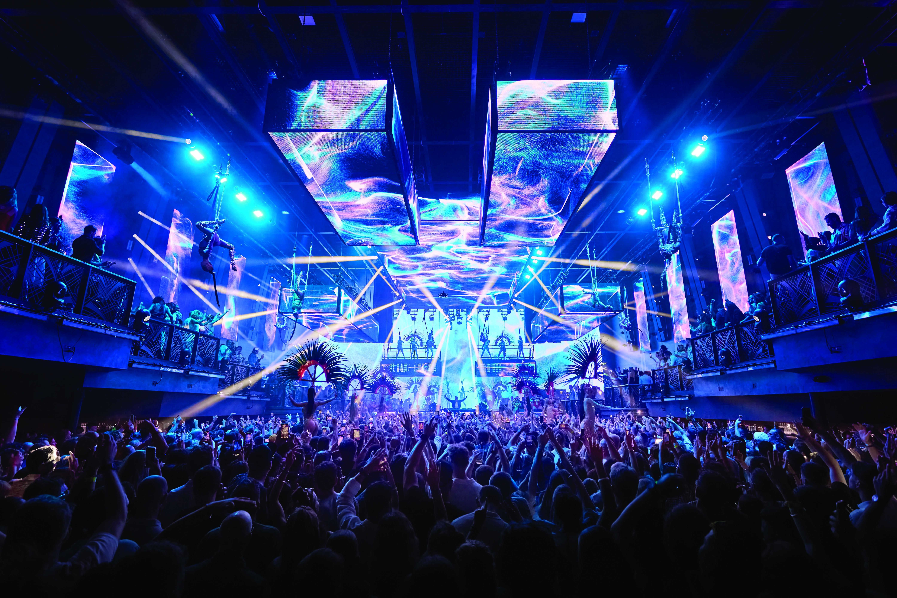

[UNVRS]
Este club en Ibiza, Spain, es reconocido por su diseño y sus visuales. Sus enormes escenarios y experiencias sensoriales lo han convertido en uno de los clubes más impactantes de la música electrónica actual, presentando artistas como Anyma, David Guetta y Carl Cox.
